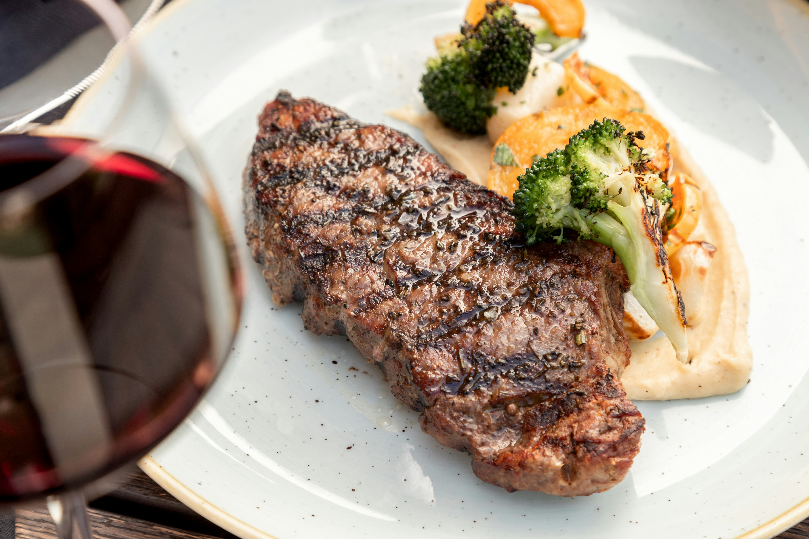

Home
New York Strip

Description
A recipe to make a new york strip based on the recipe found in
this page
Ingredients
- 4 (6 ounce) New York strip steaks
- 1/2 cup extra virgin olive oil
- 1/2 cup Worcestershire sauce
- 1/4 cup steak seasoning
- 4 tablespoons minced garlic
- 1 tablespoon red wine vinegar
- 1/2 teaspoon dried basil
- 1/2 teaspoon Italian seasoning
Steps
-
Pierce steaks on all sides with a fork.
-
Whisk olive oil, Worcestershire sauce, steak seasoning, garlic, vinegar,
basil, and Italian seasoning together in a bowl and pour into a
resealable plastic bag. Add steaks, coat with the marinade, squeeze out
excess air, and seal the bag. Marinate in the refrigerator for at least
2 hours.
-
When ready to cook, preheat an outdoor grill for high heat and lightly
oil the grate.
-
Remove steaks from the marinade and shake off excess. Discard the
remaining marinade.
-
Cook steaks on the preheated grill for 7 minutes on each side, or to
desired doneness.